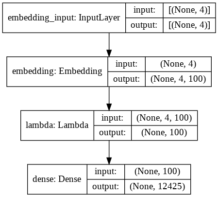
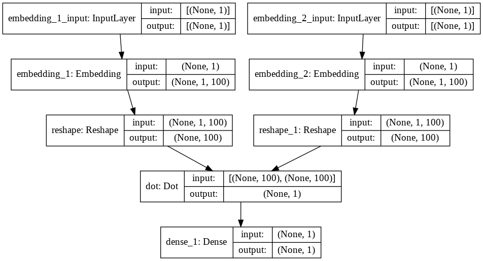

Word Embedding Using Keras¶
import pandas as pd
import numpy as np
import re
import nltk
import matplotlib.pyplot as plt
pd.options.display.max_colwidth = 200
%matplotlib inline
# Google Colab Adhoc Setting
!nvidia-smi
nltk.download(['gutenberg','punkt','stopwords'])
!pip show spacy
#!pip install --upgrade spacy
#!python -m spacy download en_core_web_trf
#!python -m spacy download en_core_web_lg
Thu Mar 11 09:53:31 2021
+-----------------------------------------------------------------------------+
| NVIDIA-SMI 460.56 Driver Version: 460.32.03 CUDA Version: 11.2 |
|-------------------------------+----------------------+----------------------+
| GPU Name Persistence-M| Bus-Id Disp.A | Volatile Uncorr. ECC |
| Fan Temp Perf Pwr:Usage/Cap| Memory-Usage | GPU-Util Compute M. |
| | | MIG M. |
|===============================+======================+======================|
| 0 Tesla T4 Off | 00000000:00:04.0 Off | 0 |
| N/A 60C P8 11W / 70W | 0MiB / 15109MiB | 0% Default |
| | | N/A |
+-------------------------------+----------------------+----------------------+
+-----------------------------------------------------------------------------+
| Processes: |
| GPU GI CI PID Type Process name GPU Memory |
| ID ID Usage |
|=============================================================================|
| No running processes found |
+-----------------------------------------------------------------------------+
[nltk_data] Downloading package gutenberg to /root/nltk_data...
[nltk_data] Package gutenberg is already up-to-date!
[nltk_data] Downloading package punkt to /root/nltk_data...
[nltk_data] Package punkt is already up-to-date!
[nltk_data] Downloading package stopwords to /root/nltk_data...
[nltk_data] Package stopwords is already up-to-date!
Name: spacy
Version: 2.2.4
Summary: Industrial-strength Natural Language Processing (NLP) in Python
Home-page: https://spacy.io
Author: Explosion
Author-email: contact@explosion.ai
License: MIT
Location: /usr/local/lib/python3.7/dist-packages
Requires: cymem, catalogue, tqdm, blis, plac, murmurhash, wasabi, preshed, requests, numpy, thinc, setuptools, srsly
Required-by: fastai, en-core-web-sm
Sample corpus of text documents¶
corpus = ['The sky is blue and beautiful.',
'Love this blue and beautiful sky!',
'The quick brown fox jumps over the lazy dog.',
"A king's breakfast has sausages, ham, bacon, eggs, toast and beans",
'I love green eggs, ham, sausages and bacon!',
'The brown fox is quick and the blue dog is lazy!',
'The sky is very blue and the sky is very beautiful today',
'The dog is lazy but the brown fox is quick!'
]
labels = ['weather', 'weather', 'animals', 'food', 'food', 'animals', 'weather', 'animals']
corpus = np.array(corpus)
corpus_df = pd.DataFrame({'Document': corpus,
'Category': labels})
corpus_df = corpus_df[['Document', 'Category']]
corpus_df
| Document | Category | |
|---|---|---|
| 0 | The sky is blue and beautiful. | weather |
| 1 | Love this blue and beautiful sky! | weather |
| 2 | The quick brown fox jumps over the lazy dog. | animals |
| 3 | A king's breakfast has sausages, ham, bacon, eggs, toast and beans | food |
| 4 | I love green eggs, ham, sausages and bacon! | food |
| 5 | The brown fox is quick and the blue dog is lazy! | animals |
| 6 | The sky is very blue and the sky is very beautiful today | weather |
| 7 | The dog is lazy but the brown fox is quick! | animals |
Simple text pre-processing¶
wpt = nltk.WordPunctTokenizer()
stop_words = nltk.corpus.stopwords.words('english')
def normalize_document(doc):
# lower case and remove special characters\whitespaces
doc = re.sub(r'[^a-zA-Z\s]', '', doc, re.I|re.A)
doc = doc.lower()
doc = doc.strip()
# tokenize document
tokens = wpt.tokenize(doc)
# filter stopwords out of document
filtered_tokens = [token for token in tokens if token not in stop_words]
# re-create document from filtered tokens
doc = ' '.join(filtered_tokens)
return doc
normalize_corpus = np.vectorize(normalize_document)
norm_corpus = normalize_corpus(corpus)
norm_corpus
array(['sky blue beautiful', 'love blue beautiful sky',
'quick brown fox jumps lazy dog',
'kings breakfast sausages ham bacon eggs toast beans',
'love green eggs ham sausages bacon',
'brown fox quick blue dog lazy', 'sky blue sky beautiful today',
'dog lazy brown fox quick'], dtype='<U51')
Load up sample corpus - Bible¶
from nltk.corpus import gutenberg
from string import punctuation
bible = gutenberg.sents('bible-kjv.txt')
remove_terms = punctuation + '0123456789'
norm_bible = [[word.lower() for word in sent if word not in remove_terms] for sent in bible]
norm_bible = [' '.join(tok_sent) for tok_sent in norm_bible]
norm_bible = filter(None, normalize_corpus(norm_bible))
norm_bible = [tok_sent for tok_sent in norm_bible if len(tok_sent.split()) > 2]
print('Total lines:', len(bible))
print('\nSample line:', bible[10])
print('\nProcessed line:', norm_bible[10])
Total lines: 30103
Sample line: ['1', ':', '6', 'And', 'God', 'said', ',', 'Let', 'there', 'be', 'a', 'firmament', 'in', 'the', 'midst', 'of', 'the', 'waters', ',', 'and', 'let', 'it', 'divide', 'the', 'waters', 'from', 'the', 'waters', '.']
Processed line: god said let firmament midst waters let divide waters waters
Implementing a word2vec model using a CBOW (Continuous Bag of Words) neural network architecture¶


Build Vocabulary¶
import keras
from keras.preprocessing import text
from keras.preprocessing import sequence
tokenizer = text.Tokenizer()
tokenizer.fit_on_texts(norm_bible)
word2id = tokenizer.word_index
word2id['PAD'] = 0
id2word = {v:k for k, v in word2id.items()}
# wids = [[word2id[w] for w in text.text_to_word_sequence(doc)] for doc in norm_bible]
wids = tokenizer.texts_to_sequences(norm_bible)
vocab_size = len(word2id)
embed_size = 100
window_size = 2
print('Vocabulary Size:', vocab_size)
print('Vocabulary Sample:', list(word2id.items())[:10])
Vocabulary Size: 12425
Vocabulary Sample: [('shall', 1), ('unto', 2), ('lord', 3), ('thou', 4), ('thy', 5), ('god', 6), ('ye', 7), ('said', 8), ('thee', 9), ('upon', 10)]
Build (context_words, target_word) pair generator¶
def generate_context_word_pairs(corpus, window_size, vocab_size):
context_length = window_size*2
# go through each unit in the corpus
for words in corpus:
sentence_length = len(words)
## extract context-word pairs
for index, word in enumerate(words):
context_words = []
label_word = []
start = index - window_size
end = index + window_size + 1
context_words.append([words[i]
for i in range(start, end)
if 0 <= i < sentence_length
and i != index])
label_word.append(word)
x = sequence.pad_sequences(context_words, maxlen=context_length)
y = keras.utils.to_categorical(label_word, vocab_size)
yield (x, y)
i = 0
for x, y in generate_context_word_pairs(corpus=wids, window_size=window_size, vocab_size=vocab_size):
if 0 not in x[0]:
print('Context (X):', [id2word[w] for w in x[0]], '-> Target (Y):', id2word[np.argwhere(y[0])[0][0]])
if i == 10:
break
i += 1
Context (X): ['old', 'testament', 'james', 'bible'] -> Target (Y): king
Context (X): ['first', 'book', 'called', 'genesis'] -> Target (Y): moses
Context (X): ['beginning', 'god', 'heaven', 'earth'] -> Target (Y): created
Context (X): ['earth', 'without', 'void', 'darkness'] -> Target (Y): form
Context (X): ['without', 'form', 'darkness', 'upon'] -> Target (Y): void
Context (X): ['form', 'void', 'upon', 'face'] -> Target (Y): darkness
Context (X): ['void', 'darkness', 'face', 'deep'] -> Target (Y): upon
Context (X): ['spirit', 'god', 'upon', 'face'] -> Target (Y): moved
Context (X): ['god', 'moved', 'face', 'waters'] -> Target (Y): upon
Context (X): ['god', 'said', 'light', 'light'] -> Target (Y): let
Context (X): ['god', 'saw', 'good', 'god'] -> Target (Y): light
Build CBOW Deep Network Model¶

import keras.backend as K
from keras.models import Sequential
from keras.layers import Dense, Embedding, Lambda
cbow = Sequential()
cbow.add(Embedding(input_dim=vocab_size, output_dim=embed_size, input_length=window_size*2))
cbow.add(Lambda(lambda x: K.mean(x, axis=1), output_shape=(embed_size,)))
cbow.add(Dense(vocab_size, activation='softmax'))
cbow.compile(loss='categorical_crossentropy', optimizer='rmsprop')
print(cbow.summary())
Model: "sequential"
_________________________________________________________________
Layer (type) Output Shape Param #
=================================================================
embedding (Embedding) (None, 4, 100) 1242500
_________________________________________________________________
lambda (Lambda) (None, 100) 0
_________________________________________________________________
dense (Dense) (None, 12425) 1254925
=================================================================
Total params: 2,497,425
Trainable params: 2,497,425
Non-trainable params: 0
_________________________________________________________________
None
keras.utils.plot_model(cbow, show_shapes=True)

Train model for 5 epochs¶
%%time
for epoch in range(1, 6):
loss = 0.
i = 0
for x, y in generate_context_word_pairs(corpus=wids, window_size=window_size, vocab_size=vocab_size):
i += 1
loss += cbow.train_on_batch(x, y)
if i % 100000 == 0:
print('Processed {} (context, word) pairs'.format(i))
print('Epoch:', epoch, '\tLoss:', loss)
print()
Processed 100000 (context, word) pairs
Processed 200000 (context, word) pairs
Processed 300000 (context, word) pairs
Epoch: 1 Loss: 4277719.899074742
Processed 100000 (context, word) pairs
Processed 200000 (context, word) pairs
Processed 300000 (context, word) pairs
Epoch: 2 Loss: 5539841.925134436
Processed 100000 (context, word) pairs
Processed 200000 (context, word) pairs
Processed 300000 (context, word) pairs
Epoch: 3 Loss: 5825754.4951127
Processed 100000 (context, word) pairs
Processed 200000 (context, word) pairs
Processed 300000 (context, word) pairs
Epoch: 4 Loss: 5513488.361097297
Processed 100000 (context, word) pairs
Processed 200000 (context, word) pairs
Processed 300000 (context, word) pairs
Epoch: 5 Loss: 4947481.834239027
CPU times: user 4h 11min 20s, sys: 22min 32s, total: 4h 33min 52s
Wall time: 3h 41min 2s
Get word embeddings¶
weights = cbow.get_weights()[0]
weights = weights[1:]
print(weights.shape)
pd.DataFrame(weights, index=list(id2word.values())[1:]).head()
(12424, 100)
| 0 | 1 | 2 | 3 | 4 | 5 | 6 | 7 | 8 | 9 | 10 | 11 | 12 | 13 | 14 | 15 | 16 | 17 | 18 | 19 | 20 | 21 | 22 | 23 | 24 | 25 | 26 | 27 | 28 | 29 | 30 | 31 | 32 | 33 | 34 | 35 | 36 | 37 | 38 | 39 | ... | 60 | 61 | 62 | 63 | 64 | 65 | 66 | 67 | 68 | 69 | 70 | 71 | 72 | 73 | 74 | 75 | 76 | 77 | 78 | 79 | 80 | 81 | 82 | 83 | 84 | 85 | 86 | 87 | 88 | 89 | 90 | 91 | 92 | 93 | 94 | 95 | 96 | 97 | 98 | 99 | |
|---|---|---|---|---|---|---|---|---|---|---|---|---|---|---|---|---|---|---|---|---|---|---|---|---|---|---|---|---|---|---|---|---|---|---|---|---|---|---|---|---|---|---|---|---|---|---|---|---|---|---|---|---|---|---|---|---|---|---|---|---|---|---|---|---|---|---|---|---|---|---|---|---|---|---|---|---|---|---|---|---|---|
| unto | 2.493178 | 2.280065 | -2.507939 | 2.784425 | 2.006123 | 2.579235 | -2.849923 | 2.374675 | 2.379350 | 2.764584 | -2.106564 | 2.382879 | -2.914682 | -2.583828 | 2.959634 | 2.622565 | -2.466287 | -2.794176 | -2.622673 | 2.524034 | 1.591839 | 2.579571 | 2.417117 | -2.163602 | 2.794503 | 2.502496 | -2.224811 | 2.355314 | 2.530450 | -2.663880 | 3.096247 | 2.273305 | 2.601277 | 2.577739 | 2.660791 | 2.132764 | -2.210376 | 2.771165 | -2.546790 | 2.334303 | ... | -2.860587 | 2.945470 | 2.765243 | -2.629065 | -2.362266 | -2.944373 | -2.517269 | 2.669332 | 2.519333 | 2.746240 | 2.500954 | -2.480806 | -2.742043 | 2.722529 | 2.869028 | -2.695514 | 2.439688 | 2.394013 | 2.290642 | 3.030485 | 1.894302 | 2.278019 | -2.496936 | -2.347033 | 2.240549 | -2.622205 | 2.696797 | -3.005467 | -2.500668 | 2.900511 | 2.633258 | 2.670748 | -2.447536 | 2.422442 | 2.593393 | 1.753121 | 2.608407 | -2.430226 | 2.335080 | -2.505792 |
| lord | 2.237636 | 1.920727 | -2.005896 | 2.395445 | 1.500550 | 2.143541 | -2.076647 | 2.127654 | 2.074989 | 1.840716 | -2.196392 | 2.013716 | -2.227787 | -2.011690 | 2.512754 | 2.074346 | -1.994763 | -2.062951 | -2.112778 | 2.267396 | 1.563455 | 1.983125 | 2.062977 | -1.970129 | 1.645113 | 2.587614 | -2.049644 | 2.144177 | 1.973272 | -2.115422 | 2.073282 | 2.104995 | 1.939169 | 2.134913 | 2.189713 | 2.205002 | -1.674901 | 2.079604 | -2.612578 | 1.696025 | ... | -2.253058 | 2.557268 | 2.488352 | -1.716908 | -2.283367 | -1.699466 | -2.066367 | 2.286157 | 2.445107 | 1.971202 | 1.687662 | -2.219192 | -2.281904 | 2.097086 | 2.332855 | -2.203106 | 2.295070 | 1.904054 | 2.069417 | 2.250185 | 1.373652 | 1.837680 | -1.860649 | -1.820732 | 1.938252 | -1.923746 | 2.405630 | -2.344059 | -1.837343 | 2.585225 | 2.478138 | 2.077151 | -2.026983 | 2.146083 | 2.061859 | 1.643556 | 2.195096 | -1.747171 | 1.937860 | -2.189663 |
| thou | 1.852034 | 1.608304 | -1.915088 | 2.129377 | 1.333169 | 2.108295 | -2.040878 | 1.774977 | 1.841824 | 1.885826 | -1.522025 | 2.160235 | -2.075351 | -2.213708 | 2.388963 | 1.665148 | -1.550717 | -1.533588 | -2.147773 | 2.215923 | 1.473649 | 2.037037 | 2.247571 | -1.738790 | 2.029315 | 1.945095 | -1.702343 | 2.062509 | 2.078270 | -2.007159 | 2.226472 | 1.921827 | 1.626323 | 1.864058 | 2.077960 | 2.003502 | -1.675634 | 1.847600 | -1.864253 | 1.811313 | ... | -2.175801 | 1.748633 | 2.516579 | -1.621244 | -2.471605 | -1.754455 | -2.023512 | 1.833258 | 2.172236 | 1.827036 | 1.609966 | -1.997724 | -2.191856 | 1.798254 | 2.252249 | -2.006888 | 2.209270 | 1.905152 | 1.799428 | 2.023958 | 1.435888 | 1.952867 | -2.001946 | -1.460272 | 1.910215 | -1.952791 | 2.003366 | -2.298617 | -1.700005 | 2.020771 | 2.276090 | 1.801864 | -2.064566 | 1.771908 | 1.822864 | 1.432321 | 1.536148 | -1.821058 | 2.106123 | -2.161884 |
| thy | 2.531327 | 2.025131 | -2.041817 | 2.218701 | 1.789895 | 2.136183 | -2.185168 | 2.030367 | 2.466120 | 2.127433 | -1.583739 | 1.597496 | -2.756582 | -2.362903 | 2.764671 | 2.397500 | -1.974481 | -2.190022 | -2.444972 | 2.530881 | 1.579834 | 2.377707 | 2.391319 | -2.078337 | 2.714062 | 2.153903 | -2.091292 | 1.877012 | 2.532566 | -2.382282 | 2.860591 | 2.033803 | 1.934266 | 2.025002 | 2.743492 | 2.118318 | -1.832843 | 2.321450 | -2.591767 | 1.957423 | ... | -2.645058 | 2.261010 | 2.772206 | -2.138278 | -2.247943 | -2.777539 | -2.508750 | 2.500719 | 2.317946 | 2.624919 | 2.312386 | -2.521078 | -2.345290 | 2.389005 | 2.709480 | -2.333166 | 2.431406 | 2.359063 | 2.120807 | 2.260307 | 1.859112 | 2.350191 | -2.309731 | -2.134687 | 2.032670 | -2.485084 | 2.549423 | -2.468534 | -2.203936 | 2.339925 | 2.163095 | 2.343931 | -2.544316 | 2.022240 | 2.183741 | 1.703355 | 2.328748 | -2.440206 | 1.934747 | -2.370390 |
| god | 2.123617 | 2.473450 | -2.375682 | 2.494669 | 1.866841 | 1.800023 | -2.114289 | 2.143275 | 2.013142 | 2.055153 | -2.077431 | 2.238841 | -2.655066 | -2.193072 | 2.406302 | 2.133641 | -1.826285 | -2.165294 | -2.263628 | 2.472098 | 1.602052 | 2.229868 | 2.025896 | -2.102528 | 2.093714 | 2.298667 | -2.200569 | 1.815781 | 2.166676 | -2.464071 | 2.685121 | 1.923397 | 2.278466 | 1.930879 | 2.454482 | 2.107688 | -2.122718 | 2.122227 | -2.026627 | 2.453970 | ... | -2.367663 | 2.196561 | 2.341169 | -2.038842 | -2.001653 | -2.226016 | -1.711143 | 1.863317 | 1.959173 | 2.127438 | 1.927445 | -2.562122 | -2.437272 | 2.149189 | 2.321251 | -2.520710 | 2.555057 | 2.183687 | 1.724928 | 2.322994 | 1.547610 | 2.080300 | -2.134106 | -2.047226 | 2.072769 | -2.247808 | 2.015329 | -2.278941 | -2.261706 | 2.498932 | 2.687076 | 1.856894 | -1.947362 | 1.629364 | 2.204880 | 1.967651 | 2.241149 | -2.265152 | 2.188684 | -2.091099 |
5 rows × 100 columns
Build a distance matrix to view the most similar words (contextually)¶
from sklearn.metrics.pairwise import euclidean_distances
# compute pairwise distance matrix
distance_matrix = euclidean_distances(weights)
print(distance_matrix.shape)
# view contextually similar words
similar_words = {search_term: [id2word[idx] for idx in distance_matrix[word2id[search_term]-1].argsort()[1:6]+1]
for search_term in ['god', 'jesus', 'noah', 'egypt', 'john', 'gospel', 'moses','famine']}
similar_words
(12424, 12424)
{'egypt': ['night', 'smote', 'strong', 'judgment', 'could'],
'famine': ['grave', 'fields', 'flee', 'consumed', 'daily'],
'god': ['may', 'also', 'lord', 'ye', 'great'],
'gospel': ['gentiles', 'hearts', 'sound', 'entered', 'saints'],
'jesus': ['heaven', 'sea', 'dead', 'spirit', 'round'],
'john': ['disciples', 'peter', 'entered', 'new', 'must'],
'moses': ['lay', 'nothing', 'kept', 'sins', 'knew'],
'noah': ['uncleanness', 'used', 'tarried', 'birds', 'willing']}
Implementing a word2vec model using a skip-gram neural network architecture¶
Build Vocabulary¶
from keras.preprocessing import text
tokenizer = text.Tokenizer()
tokenizer.fit_on_texts(norm_bible)
word2id = tokenizer.word_index
id2word = {v:k for k, v in word2id.items()}
vocab_size = len(word2id) + 1
embed_size = 100
# wids = [[word2id[w] for w in text.text_to_word_sequence(doc)] for doc in norm_bible]
wids = tokenizer.texts_to_sequences(norm_bible)
print('Vocabulary Size:', vocab_size)
print('Vocabulary Sample:', list(word2id.items())[:10])
Vocabulary Size: 12425
Vocabulary Sample: [('shall', 1), ('unto', 2), ('lord', 3), ('thou', 4), ('thy', 5), ('god', 6), ('ye', 7), ('said', 8), ('thee', 9), ('upon', 10)]
Build and View sample skip grams ((word1, word2) -> relevancy)¶
from keras.preprocessing.sequence import skipgrams
# generate skip-grams
skip_grams = [skipgrams(wid, vocabulary_size=vocab_size, window_size=10) for wid in wids]
# view sample skip-grams
pairs, labels = skip_grams[0][0], skip_grams[0][1]
for i in range(10):
print("({:s} ({:d}), {:s} ({:d})) -> {:d}".format(
id2word[pairs[i][0]], pairs[i][0],
id2word[pairs[i][1]], pairs[i][1],
labels[i]))
(james (1154), lovely (5395)) -> 0
(bible (5766), openest (7782)) -> 0
(james (1154), bible (5766)) -> 1
(bible (5766), king (13)) -> 1
(king (13), zechariah (1353)) -> 0
(james (1154), king (13)) -> 1
(bible (5766), withal (1531)) -> 0
(king (13), james (1154)) -> 1
(james (1154), gopher (8490)) -> 0
(king (13), pigeons (3296)) -> 0
Build Skip-gram Deep Network Model¶
from keras.layers import Dot
from keras.layers.core import Dense, Reshape
from keras.layers.embeddings import Embedding
from keras.models import Sequential
from keras.models import Model
word_model = Sequential()
word_model.add(Embedding(vocab_size, embed_size,
embeddings_initializer="glorot_uniform",
input_length=1))
word_model.add(Reshape((embed_size, )))
context_model = Sequential()
context_model.add(Embedding(vocab_size, embed_size,
embeddings_initializer="glorot_uniform",
input_length=1))
context_model.add(Reshape((embed_size,)))
model_arch = Dot(axes=1)([word_model.output, context_model.output])
model_arch = Dense(1, kernel_initializer="glorot_uniform", activation="sigmoid")(model_arch)
model = Model([word_model.input,context_model.input], model_arch)
#model.add(Merge([word_model, context_model], mode="dot"))
#model.add(Dense(1, kernel_initializer="glorot_uniform", activation="sigmoid"))
model.compile(loss="mean_squared_error", optimizer="rmsprop")
print(model.summary())
Model: "model"
__________________________________________________________________________________________________
Layer (type) Output Shape Param # Connected to
==================================================================================================
embedding_1_input (InputLayer) [(None, 1)] 0
__________________________________________________________________________________________________
embedding_2_input (InputLayer) [(None, 1)] 0
__________________________________________________________________________________________________
embedding_1 (Embedding) (None, 1, 100) 1242500 embedding_1_input[0][0]
__________________________________________________________________________________________________
embedding_2 (Embedding) (None, 1, 100) 1242500 embedding_2_input[0][0]
__________________________________________________________________________________________________
reshape (Reshape) (None, 100) 0 embedding_1[0][0]
__________________________________________________________________________________________________
reshape_1 (Reshape) (None, 100) 0 embedding_2[0][0]
__________________________________________________________________________________________________
dot (Dot) (None, 1) 0 reshape[0][0]
reshape_1[0][0]
__________________________________________________________________________________________________
dense_1 (Dense) (None, 1) 2 dot[0][0]
==================================================================================================
Total params: 2,485,002
Trainable params: 2,485,002
Non-trainable params: 0
__________________________________________________________________________________________________
None
keras.utils.plot_model(model, show_shapes=True)

Train the model for 5 epochs¶
for epoch in range(1, 6):
loss = 0
for i, elem in enumerate(skip_grams):
pair_first_elem = np.array(list(zip(*elem[0]))[0], dtype='int32')
pair_second_elem = np.array(list(zip(*elem[0]))[1], dtype='int32')
labels = np.array(elem[1], dtype='int32')
X = [pair_first_elem, pair_second_elem]
Y = labels
if i % 10000 == 0:
print('Processed {} (skip_first, skip_second, relevance) pairs'.format(i))
loss += model.train_on_batch(X,Y)
print('Epoch:', epoch, 'Loss:', loss)
Processed 0 (skip_first, skip_second, relevance) pairs
Processed 10000 (skip_first, skip_second, relevance) pairs
Processed 20000 (skip_first, skip_second, relevance) pairs
Epoch: 1 Loss: 4378.33015979873
Processed 0 (skip_first, skip_second, relevance) pairs
Processed 10000 (skip_first, skip_second, relevance) pairs
Processed 20000 (skip_first, skip_second, relevance) pairs
Epoch: 2 Loss: 3713.269076963654
Processed 0 (skip_first, skip_second, relevance) pairs
Processed 10000 (skip_first, skip_second, relevance) pairs
Processed 20000 (skip_first, skip_second, relevance) pairs
Epoch: 3 Loss: 3700.8700029423344
Processed 0 (skip_first, skip_second, relevance) pairs
Processed 10000 (skip_first, skip_second, relevance) pairs
Processed 20000 (skip_first, skip_second, relevance) pairs
Epoch: 4 Loss: 3675.715855676419
Processed 0 (skip_first, skip_second, relevance) pairs
Processed 10000 (skip_first, skip_second, relevance) pairs
Processed 20000 (skip_first, skip_second, relevance) pairs
Epoch: 5 Loss: 3578.9555171455722
Get word embeddings¶
word_embed_layer = model.layers[2]
weights = word_embed_layer.get_weights()[0][1:]
print(weights.shape)
pd.DataFrame(weights, index=id2word.values()).head()
(12424, 100)
| 0 | 1 | 2 | 3 | 4 | 5 | 6 | 7 | 8 | 9 | 10 | 11 | 12 | 13 | 14 | 15 | 16 | 17 | 18 | 19 | 20 | 21 | 22 | 23 | 24 | 25 | 26 | 27 | 28 | 29 | 30 | 31 | 32 | 33 | 34 | 35 | 36 | 37 | 38 | 39 | ... | 60 | 61 | 62 | 63 | 64 | 65 | 66 | 67 | 68 | 69 | 70 | 71 | 72 | 73 | 74 | 75 | 76 | 77 | 78 | 79 | 80 | 81 | 82 | 83 | 84 | 85 | 86 | 87 | 88 | 89 | 90 | 91 | 92 | 93 | 94 | 95 | 96 | 97 | 98 | 99 | |
|---|---|---|---|---|---|---|---|---|---|---|---|---|---|---|---|---|---|---|---|---|---|---|---|---|---|---|---|---|---|---|---|---|---|---|---|---|---|---|---|---|---|---|---|---|---|---|---|---|---|---|---|---|---|---|---|---|---|---|---|---|---|---|---|---|---|---|---|---|---|---|---|---|---|---|---|---|---|---|---|---|---|
| shall | -0.230191 | -0.012980 | -0.119776 | -0.214139 | -0.139326 | -0.005782 | -0.000499 | -0.012986 | -0.129972 | -0.134485 | 0.073344 | -0.004424 | 0.051141 | -0.086042 | -0.023183 | -0.073094 | 0.003325 | -0.095509 | 0.117723 | 0.087508 | 0.194871 | 0.067518 | 0.146130 | -0.152153 | -0.008002 | -0.070856 | -0.360937 | 0.031479 | 0.002801 | 0.059270 | 0.023433 | 0.040273 | -0.098525 | 0.056835 | 0.097193 | 0.036708 | -0.040750 | 0.063268 | 0.029116 | 0.100384 | ... | 0.059290 | -0.082546 | 0.073031 | 0.011758 | 0.024530 | 0.104860 | -0.058176 | -0.100977 | -0.046878 | -0.028711 | -0.011928 | 0.043426 | -0.063566 | 0.027842 | -0.073853 | 0.037065 | 0.106886 | -0.235693 | 0.068956 | 0.041608 | 0.090529 | -0.073773 | -0.191838 | -0.024634 | 0.113254 | -0.018184 | 0.062602 | 0.004019 | 0.001023 | 0.080665 | -0.014163 | 0.079130 | -0.033400 | 0.013658 | -0.113731 | -0.074399 | -0.005767 | 0.324398 | -0.168895 | -0.038513 |
| unto | 0.033917 | -0.033548 | 0.002460 | 0.051957 | -0.037578 | -0.058962 | 0.045944 | -0.033817 | -0.167547 | -0.029642 | 0.052118 | 0.034987 | -0.019723 | -0.248761 | -0.027972 | -0.130536 | -0.017513 | -0.080016 | 0.169364 | 0.050531 | 0.089165 | 0.094314 | 0.022516 | -0.026207 | 0.070197 | -0.037644 | -0.465807 | 0.003047 | -0.035397 | -0.020680 | -0.050190 | -0.044418 | -0.055332 | 0.163345 | 0.122113 | -0.019833 | -0.055745 | 0.068905 | 0.019674 | 0.133357 | ... | 0.080152 | -0.039098 | 0.125916 | 0.018961 | -0.052088 | 0.046908 | -0.234005 | -0.029314 | -0.042654 | -0.043847 | -0.185238 | 0.047657 | 0.011895 | 0.030421 | -0.212477 | -0.100483 | 0.076776 | -0.284910 | -0.001194 | 0.152445 | -0.023135 | -0.073265 | -0.036882 | 0.054470 | 0.123800 | 0.007911 | 0.130739 | -0.011884 | 0.183925 | 0.087923 | -0.153560 | -0.007753 | -0.069279 | 0.063225 | -0.002554 | 0.023410 | -0.052896 | 0.167541 | -0.144698 | 0.059140 |
| lord | -0.095424 | -0.007718 | -0.093306 | -0.064070 | -0.167174 | -0.115682 | 0.010716 | -0.037788 | -0.056763 | -0.035718 | 0.134224 | -0.057177 | 0.092480 | -0.105964 | -0.060721 | -0.068378 | -0.016322 | 0.001394 | 0.070993 | 0.082885 | 0.186197 | 0.079952 | 0.059199 | 0.026122 | 0.055251 | -0.068530 | -0.180406 | 0.068527 | 0.080998 | 0.014038 | -0.079342 | 0.041935 | -0.266223 | 0.016576 | 0.172890 | -0.072076 | -0.151022 | 0.124902 | -0.050274 | -0.029396 | ... | -0.011206 | 0.012265 | 0.008988 | 0.002559 | 0.063905 | 0.138360 | -0.215831 | 0.045561 | -0.178735 | -0.049412 | -0.087286 | 0.129855 | -0.022569 | -0.022720 | -0.092201 | 0.029446 | 0.011717 | -0.180359 | -0.032985 | 0.106314 | 0.087757 | -0.013804 | -0.125697 | -0.022454 | 0.018215 | -0.016422 | 0.073527 | -0.048009 | 0.087053 | 0.053596 | -0.220106 | -0.048350 | -0.115681 | 0.027153 | -0.065599 | -0.040915 | -0.000288 | -0.003145 | -0.221902 | -0.052453 |
| thou | -0.015430 | -0.015494 | -0.014965 | 0.118186 | -0.042467 | 0.015224 | -0.168478 | -0.025783 | 0.049552 | -0.047795 | 0.035379 | -0.002506 | 0.052654 | -0.178429 | 0.019827 | -0.140220 | -0.013930 | -0.063914 | -0.041961 | 0.072887 | 0.044044 | 0.088513 | 0.086183 | -0.076763 | 0.003079 | -0.137509 | -0.500076 | -0.006353 | 0.052944 | 0.096665 | 0.015243 | -0.038306 | -0.051829 | 0.136486 | 0.196201 | 0.053081 | 0.032940 | 0.024769 | -0.084245 | -0.067825 | ... | -0.009351 | -0.064741 | 0.072620 | -0.061677 | 0.212665 | 0.085871 | -0.114312 | -0.070660 | -0.064450 | -0.055936 | -0.012863 | 0.109043 | 0.283692 | 0.067448 | -0.028274 | -0.015870 | 0.034884 | -0.298618 | 0.035293 | 0.004853 | -0.079439 | 0.004860 | 0.021883 | -0.012389 | 0.056918 | -0.066689 | 0.041185 | -0.006304 | 0.085801 | 0.338103 | -0.231865 | -0.004770 | -0.046060 | 0.008816 | -0.352311 | -0.081346 | 0.007086 | 0.007176 | -0.020751 | -0.022667 |
| thy | -0.052541 | 0.025602 | -0.057033 | 0.021996 | -0.014574 | -0.163738 | -0.062247 | 0.026953 | -0.088437 | -0.097307 | 0.117441 | -0.024271 | 0.048699 | -0.124647 | -0.212219 | -0.012106 | -0.024889 | -0.026840 | -0.007780 | -0.039188 | 0.072413 | -0.013055 | 0.069651 | -0.018947 | 0.078843 | 0.001588 | -0.338669 | 0.083456 | -0.056253 | 0.006093 | 0.001902 | 0.138836 | -0.113098 | 0.050578 | 0.096934 | -0.017088 | -0.255093 | 0.013012 | -0.106204 | 0.179721 | ... | 0.066951 | -0.049823 | 0.048732 | -0.045002 | -0.034193 | 0.058281 | -0.230789 | 0.098568 | -0.016107 | -0.121213 | -0.088523 | 0.074341 | 0.131518 | 0.005541 | -0.176916 | 0.162957 | -0.030527 | -0.178511 | 0.079122 | 0.028123 | -0.042759 | -0.151469 | -0.067745 | 0.060250 | 0.121428 | -0.056656 | 0.027064 | 0.009636 | 0.035933 | 0.171641 | -0.161448 | -0.029322 | -0.063280 | -0.009890 | -0.275462 | -0.040079 | 0.198287 | 0.132119 | 0.116443 | -0.036876 |
5 rows × 100 columns
Build a distance matrix to view the most similar words (contextually)¶
from sklearn.metrics.pairwise import euclidean_distances
distance_matrix = euclidean_distances(weights)
print(distance_matrix.shape)
similar_words = {search_term: [id2word[idx] for idx in distance_matrix[word2id[search_term]-1].argsort()[1:6]+1]
for search_term in ['god', 'jesus', 'noah', 'egypt', 'john', 'gospel', 'moses','famine']}
similar_words
(12424, 12424)
{'egypt': ['whither', 'fight', 'spoil', 'left', 'possess'],
'famine': ['pestilence', 'drive', 'former', 'increase', 'countries'],
'god': ['lord', 'us', 'nothing', 'spirit', 'might'],
'gospel': ['church', 'preached', 'preach', 'pilate', 'always'],
'jesus': ['christ', 'disciples', 'faith', 'peter', 'scribes'],
'john': ['galilee', 'peter', 'scribes', 'preached', 'asked'],
'moses': ['aaron', 'congregation', 'commanded', 'minister', 'command'],
'noah': ['shem', 'methuselah', 'ham', 'contentment', 'haran']}
Visualize word embeddings¶
from sklearn.manifold import TSNE
words = sum([[k] + v for k, v in similar_words.items()], [])
words_ids = [word2id[w] for w in words]
word_vectors = np.array([weights[idx] for idx in words_ids])
print('Total words:', len(words), '\tWord Embedding shapes:', word_vectors.shape)
tsne = TSNE(n_components=2, random_state=0, n_iter=10000, perplexity=3)
np.set_printoptions(suppress=True)
T = tsne.fit_transform(word_vectors)
labels = words
plt.figure(figsize=(14, 8))
plt.scatter(T[:, 0], T[:, 1], c='steelblue', edgecolors='k')
for label, x, y in zip(labels, T[:, 0], T[:, 1]):
plt.annotate(label, xy=(x+1, y+1), xytext=(0, 0), textcoords='offset points')
Total words: 48 Word Embedding shapes: (48, 100)
References¶
Sarkar (2020) Ch 4 Feature Engineering for Text Representation